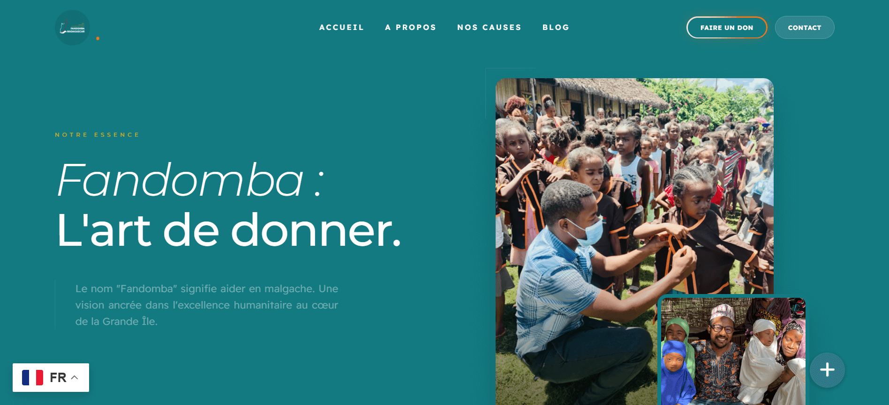

Déployé
Freelance
@ EpikBrand
Fandomba Madagascar
Développement d'une plateforme de don avec payment Vanilla pay International alliant design épuré et gestion de contenu WordPress sur-mesure.
Visiter le site →